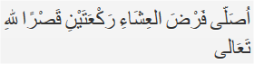

Solat Qosor
Solat Qosor
Tata caranya sebagai berikut: Berniat salat dengan cara qasar. Jika dilafalkan sebagai berikut:  ”Ushalli fardhal isyai raka'ataini qashran lillaahi-ta'aala” Artinya: “Saya berniat salat isya dua rakaat diqashar karena Alla Ta’ala”
Qosor Isya
Cara Melaksanakan Shalat Qashar, Isya